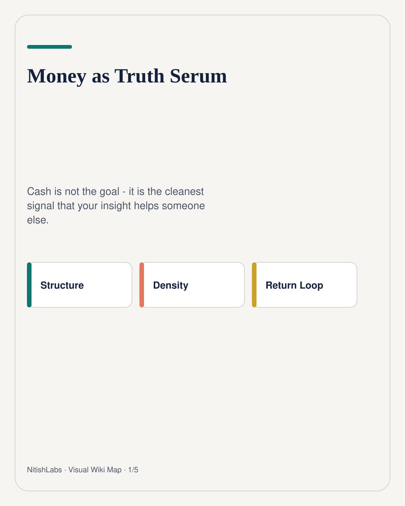
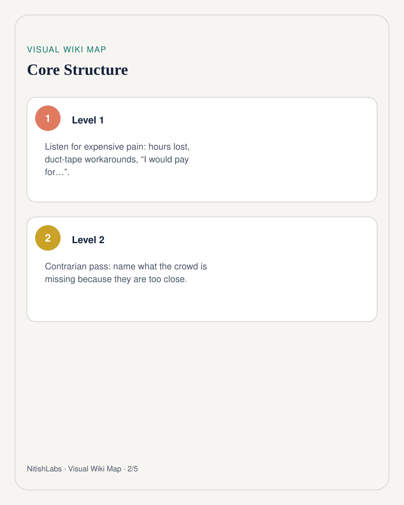
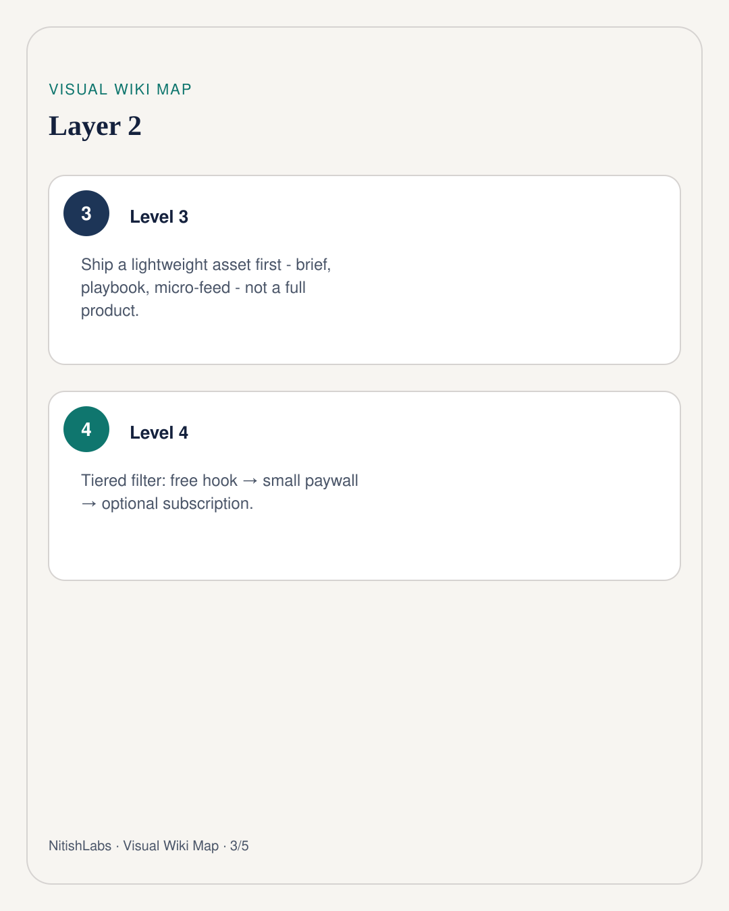
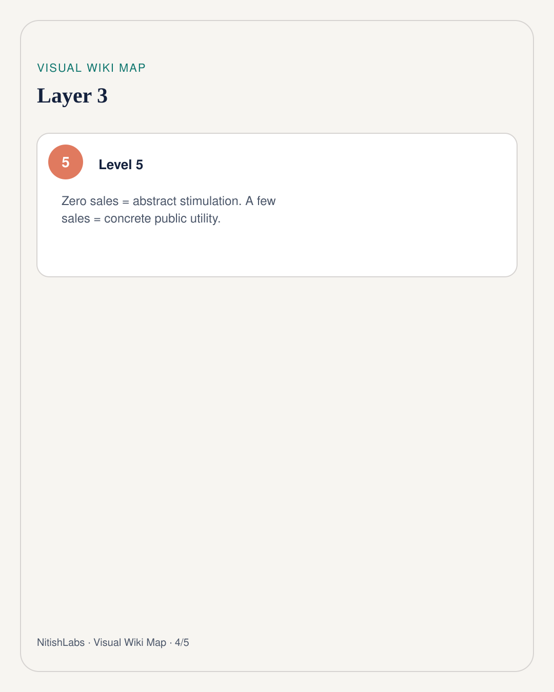
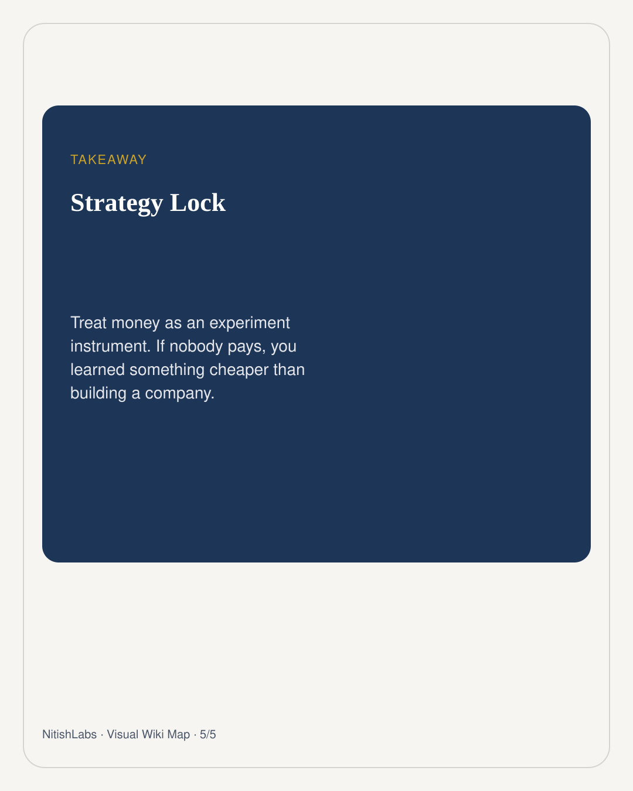

Money as Truth Serum
Intellectual stimulation feels like progress. A credit card swipe is a different kind of honesty - and you can run it as an experiment, not a personality.
Visual Wiki Map
Compressed schema carousel · swipe





Nitish Chauhan’s framing is playful and sharp: money is not the goal. Money is the most optimal signal for whether your work is a genuine contribution - or an abstract game you are playing with yourself.
The three-step extraction
- Listen for expensive pain - hours lost, duct-tape workarounds, “I would pay for a fix.”
- Run a contrarian pass - name what people are missing because they are too close to the problem.
- Ship a lightweight asset - brief, playbook, micro-feed. Not a full product yet.
Free hook → small paywall ($19-$99) → optional subscription 0 sales → abstract / mistargeted 3-5 sales → human utility validated
How to run it as an experiment
Pick one niche with disposable budget. Deploy a low-code agent to scrape recent friction. Spend two hours packaging the strongest finding. Put non-zero price friction on the template. Drop the pattern (not a hard sell) back into the community where the pain was found. Then read the signal without drama.
If nobody pays, you learned something cheaper than building a company. If a few people pay, you have a receipt that the insight was concrete.
Truth serum, not theology. Keep the experiment playful. Keep the ego out of the checkout page.